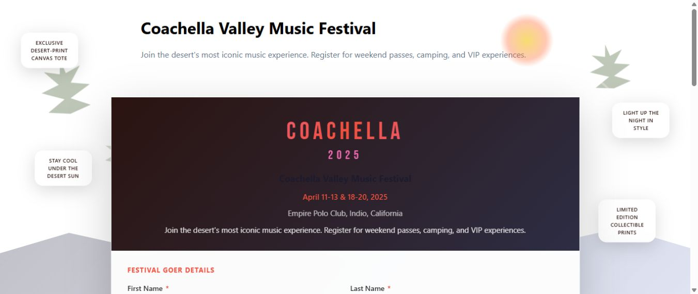

Publish and place a form on an Umbraco site
A published MegaForm can run at its own public URL or be selected on an Umbraco content page. Both methods use the same form definition and send entries to the same form workspace.
Publish the form
- Open the form under MegaForm → Forms.
- Select Preview and complete a test pass.
- Select Publish and View Form.
- Confirm that the public form opens outside the
/umbracobackoffice path.
Every form has a standalone address in this format:
/f/{formId}
For example, a form with ID 204 is available at /f/204 after publication.

Place the form on a content page
The package provides a native MegaForm Picker data type and a MegaForm Page document type.
- Open Content in the Umbraco backoffice.
- Create a page using MegaForm Page, or open a document type that already contains a MegaForm Picker property.
- In the MegaForm property, select the published form.
- Save and publish the content page.
- Open the page's Info tab and use Open in browser to verify the public URL.
If your site uses a custom document type, an administrator can add the MegaForm Picker data type to that document type. This is a one-time site setup; editors then choose forms in the same way as other Umbraco content properties.
Before going live
- Submit the form in a private browser window.
- Confirm that required and conditional fields behave correctly.
- Confirm that a new entry appears under Entries.
- Verify email, payment, upload, or workflow actions used by the form.
- Check the page on both desktop and mobile widths.
Note
Backoffice URLs begin with /umbraco. A public page or standalone form URL does not.
Troubleshooting
If the form does not appear, confirm that the form and content page are both published, that the picker contains the intended form, and that the document type has a working template. If a submit action fails, check the form workflow and the corresponding site-wide settings.